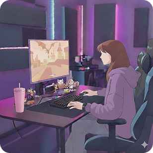
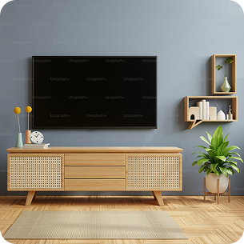

出身：鹿児島県奄美市
生年月日：1992/07/15
父の転勤の為、各地を点々とし
20年ほどは福岡に在住。
Sato Nao
鹿児島県の奄美大島出身です。
趣味はゲーム・アニメ・漫画とマーダーミステリーです。
★History★
私の経歴
高校：ビジネス情報系を卒業
専門学校：声優学科を卒業
その後、数年声優の道を目指すも
オーディションの過酷さから断念し就職へ。
商品梱包/データ入力/QA
高校で習ったスキルを活かして、主にPCを使用する職種に勤務。QA職が長く主にテストケースの作成を担当していた。データ入力の際SQL Oracleも触れている。
★Like★
私の好きなもの
-
ゲーム
・グランブルーファンタジー
・ポケモン
・マインクラフトetc...
趣味 室内
-

マーダーミステリー
体験型ミステリー。自分が小説の登場人物になりきってミステリーを解くゲーム。
etc...
趣味 室内 外出
-

アニメ
・コードギアス
・天元突破グレンラガンetc...
趣味 室内
-
イラスト
趣味範囲でのイラスト制作。
etc...
趣味 室内
-
漫画
・D.Gray-man
・僕のヒーローアカデミアetc...
趣味 室内
-
コーヒー
家では豆から挽いて飲む事が好き。
カフェに入った時の珈琲の香りをかぐことが至宝です。etc...
外出 室内 飲食
About
私について
- Sato Nao
- 鹿児島県奄美市主出身。福岡県在住。
趣味は漫画アニメゲームで、時折イラストを描いています！
連絡先
e-mail： usodayo@gmail.com
Tell：080-0000-0000